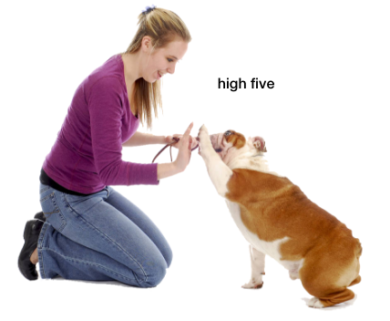

It means being able to speak and hear any language, including animal language. It is a translator capable of two-way communication between humans and animals as well as between animals. The ultimate goal of Anylingual is to create a world where all animals can communicate.
ANI-LINGUAL
animal / any
여러 언어를 말하거나 사용한다는 뜻의 접미사 lingual
동물의 언어를 비롯한 어떤 언어로도 말하고 들을 수 있다는 뜻이며,
사람과 동물은 물론, 동물과 동물 간의 양방향 소통도 가능한 번역기입니다.
애니링구얼의 최종목표는 모든 동물끼리 소통할 수 있는 세상을 만드는 것입니다.
How to use Ani-lingual?
- 동물의 타입을 선택하세요.(사람일 경우 사람항목을 선택하세요.)

- 녹음버튼을 누르세요.

- 동물의 호흡이나 소리를 녹음하세요. (사람의 경우 말하세요.)


- 데이터베이스에 저장된 소리를 확인하고 분석 후 번역이 표시됩니다.

- 동물에게 감사의 인사를 전하세요.

When to use Ani-lingual?
애니링구얼을 언제 사용하면 좋을지 상황별 예시를 알려드립니다.

- 일상에서 구체적인 의사 전달
- 배고파 로얄캐닌 습식사료
한 바가지 먹고싶어 많이 줘.
나 지금 쉬 마려운데 배변패드
3일전부터 썼더니 찝찝해 갈아줘.
마 주인아 서마터폰 그만하고 산책가자.
- 위급상황에서 급하게 요청
- 주인아 나 아까 길에서 주워먹은
치즈가 상했나봐 위 아파 병원가자.
산책갔다 와서 진드기가 붙었나봐
머리에서 12cm 떨어진 등
쪽이 간지러워 얼른 떼줘.
- 동물이 납득할 수 있도록 상황 설명
- 흰동아 오늘은 태풍이 불어서
못 나가 미안해
대신 내일 두번 나가자.
지금 간단하게 건강검진하러
병원가는거야
금방 끝나니까 너무 걱정하지 마.
- 다양한 감정을 함께 공유
- 같은 동물친구를
사귀고 싶을 때
서로 말장난을 치며 친밀감을
형성하고 싶을 때
일상에서 희노애락을
공유하고 싶을 때